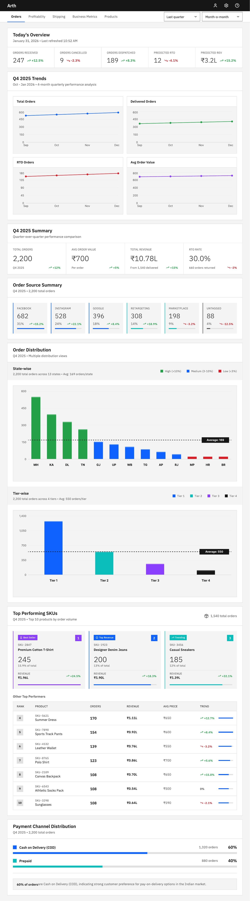
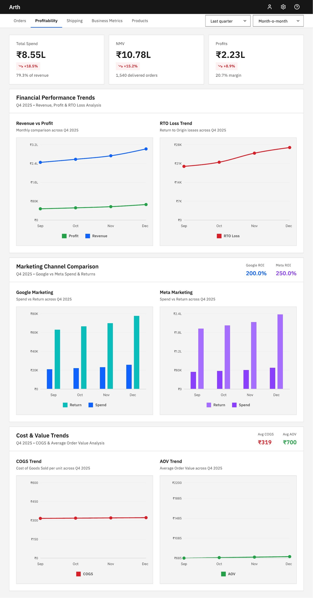
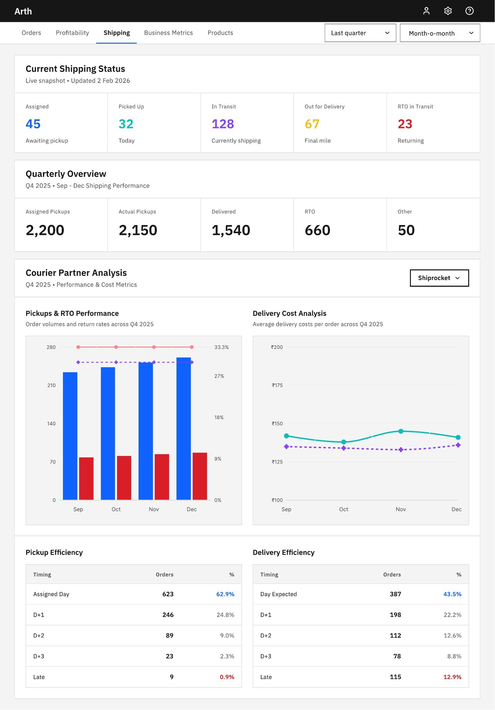

Built for data-heavy interfaces
Components stress-tested against dense tabular data, long label strings and multi-axis charts.

Case study · 2025 · Product design
In brief
Independent e-commerce owners were reading their business from three dashboards that disagreed with each other. Arth folds logistics, marketing and SKU-level data into one surface — so the number you act on is the only number there is.
01 — Overview
During my time as a growth consultant, I noticed a recurring pain point: independent e-commerce owners were working across multiple disconnected dashboards — one for marketing, one for logistics, one for SKU-level product data — each producing conflicting profitability reports.
There was no single source of truth. Decision-making was slow, fragmented, and dependent on manually stitching spreadsheets together.
02 — Research
I interviewed stakeholders from my prior role and extended network. All names are withheld for confidentiality. The sessions focused on five core themes:
03 — Design system
For a data-dense enterprise analytics product, Carbon was the natural fit. It's purpose-built for complex information hierarchies and provides the kind of accessibility and visual discipline that analytics tools demand.
Components stress-tested against dense tabular data, long label strings and multi-axis charts.
First-class chart components with a consistent visual language across bar, line and donut formats.
Type scale and spacing that guides the eye from KPI summary down to drill-down detail.
WCAG 2.1 AA baked in — critical for tools used by diverse teams across long sessions.
04 — Final designs
The final dashboard covers orders, profitability and shipping analytics — all within a single interface, eliminating the need to switch between tools.



05 — Conclusion
Arth unifies disparate data sources into a single cohesive interface — giving e-commerce owners the holistic view they need to make fast, confident decisions without context-switching between tools.
3→1
Dashboards unified
IBM
Carbon design system
3
Core analytics views
This is an ongoing project. I'm currently running an eye-tracking study using Tobii software to validate the information hierarchy and understand how analysts navigate data-dense interfaces. Results will be published here as the study completes.